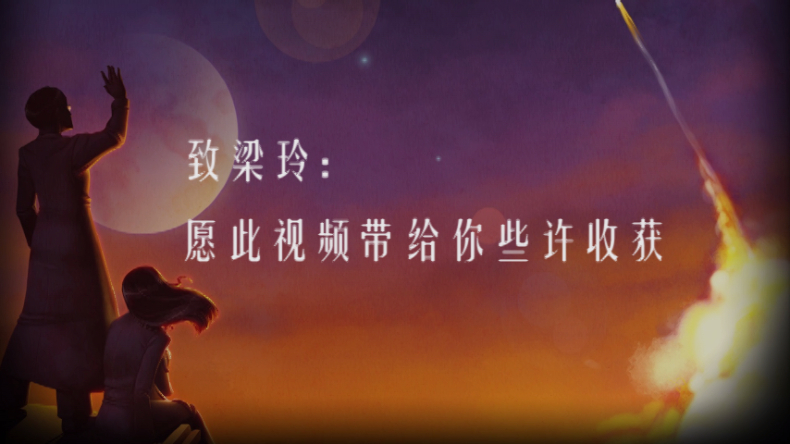

未完成的《To The Moon》解说视频
{kind=link}
从2013年开始接触“解说视频”，对视频制作一见钟情，所以也想做一名小小播客。
许多创作诱惑让我毅然决定在2014年开始制作游戏解说视频。4月份我挑选了《To The Moon》这部游戏作为视频的主要内容，到现在一个月时间过去了，通过学习与制作，我对解说视频不再那么陌生，但是我却决定先不录制这部作品了，因为我还驾驭不了这部作品。
To The Moon是什么？
我的观点
它不仅仅是一部游戏，在我心目中它就是一件艺术品，我一直所追求的。
在大概4个小时游戏时间里，身临其境的体验一个故事，体验不一样的人生。它具有独立游戏的特色，可以明显感受到作者的情怀，其实一切没有那么复杂，作者就是做一部游戏感动下玩家，并和玩家交流想法，既然“作为创造者的你”这么诚恳，那我就接招啦。
Simple is nice,nice is good – 简单即好，如果你的复杂不能带来价值
基本介绍
RPGMAKER引擎制作的角色扮演游戏。这虽然是个像素画微型游戏，流程只有几个小时并且没有真正的战斗。故事讲述一个博士的工作是为弥留之际的人们完成最后的心愿，而这回这位约翰尼老人最后的心愿竟然是——去月球。
开发厂商
自由鸟游戏工作室（FreebirdGames），由加拿大华人高瞰（Reives）在5年前创建，目前有5款RPG游戏，第5款游戏A Bird Story是To The Moon的续作，团队共有4名成员，他们的设计理念就是让玩家如临其境去感受一个故事。
我在制作视频时的片段


我怕漂亮的词无法表达视频所带来的价值，所以使用了“些许收获”。
就好像我玩一周目后，心中有很多感概，但无从说起，害怕说出来不够好，毁了它在我心目中的形象。这部视频的命运也是如此，我不满意现在的水平，有些遗憾。
{kind=link}
制作视频衍生的思考
制作视频在我的事务分类里面算是兴趣，不以盈利为目的投入时间。这两年我找过一些个人兴趣，如吉他、音乐制作、绘画、科技数码等。
现在我已经放弃了某些兴趣，因为需要花太多时间才能达到预期或者见闻与实践差别太大，寻找兴趣到放弃兴趣这一过程叫做筛选，经历后留下的才是目前真正喜欢的，若不经历会一直挂念它们。
我还会继续寻找更多兴趣，如运动，美食等，视频制作还会继续努力的。
终于对放弃这部视频找了个借口，我没有那么压抑了。